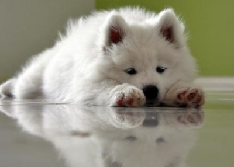
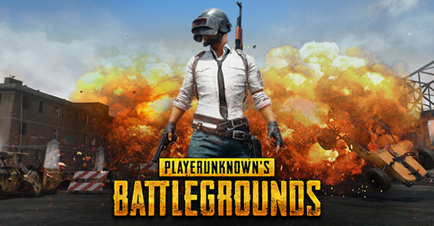
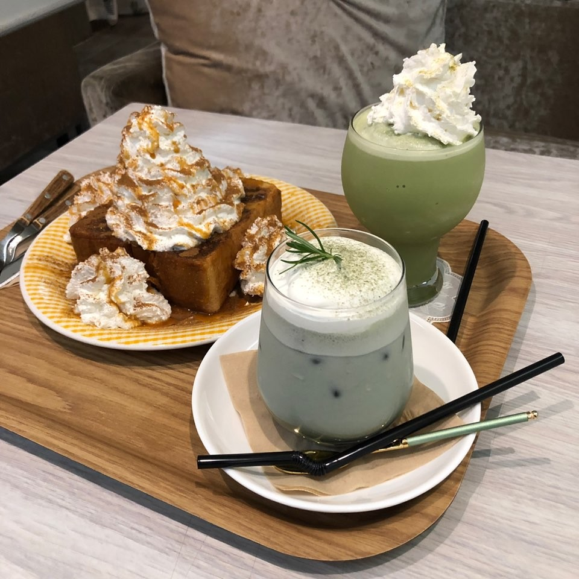

1) 첫 번째 버킷리스트 : 강아지 키우기

저는 강아지를 사랑합니다. 42살에 강아지를 입양할거에요.
2) 두 번째 버킷리스트 : 배그 치킨 먹기

저는 게임하는걸 좋아합니다. 요즘 다양한 게임들을 시도하고있습니다.
같이 게임하러갈 사람 클릭~
3) 세 번째 버킷리스트 : 인하대후문 카페 정복하기

저는 디저트도 좋아합니다. 인후 카페 다 가보는게 목표에요. 같이 가실 분 구해요
4) 네 번째 버킷리스트 : 1인분 코딩실력 갖추기
열심히... 공부해서 다음엔 더 나은 웹페이지를 만들겠습니다...
진짜 열심히 할게요...,,,
점점 나아지는 저의 모습 지켜봐주세요